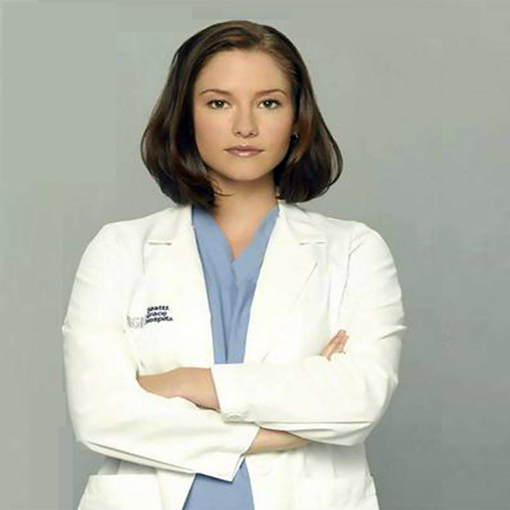

主任医师
实习医生
-
Meredith Grey
在医疗程序和紧急情况下，她拥有稳重的心态，是人的天然观察者。在捕捉细节和精确诊断方面有着惊人的天赋。在医学研究试验和处理心理受损患者的方面有着极佳的天赋和耐心。
Learn more -
-
-
-
-



在医疗程序和紧急情况下，她拥有稳重的心态，是人的天然观察者。在捕捉细节和精确诊断方面有着惊人的天赋。在医学研究试验和处理心理受损患者的方面有着极佳的天赋和耐心。
Learn more